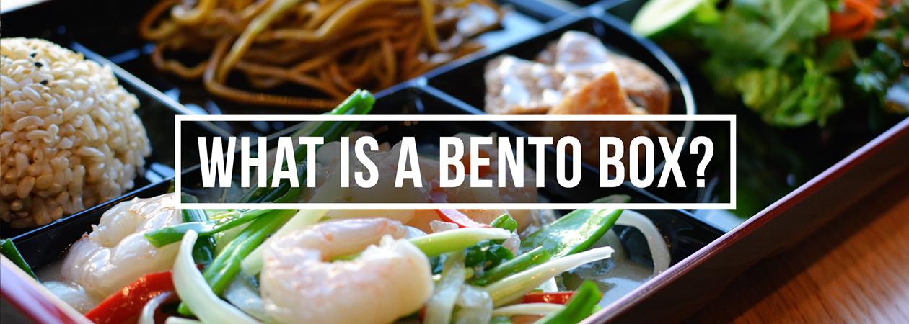

A huge variety of herbs and spices, curry pastes and condiments are integral parts of dishes across Asia

Techniques encompass some of those used in the West, plus a number of Asian regional styles. Frying is either shallow, deep or stir-fry depending on the dish and ingredients. Steaming is a traditional Chinese cooking method that has spread across countries with Chinese populations, and been adopted by other cultures.